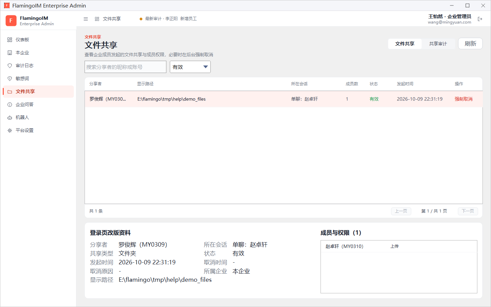
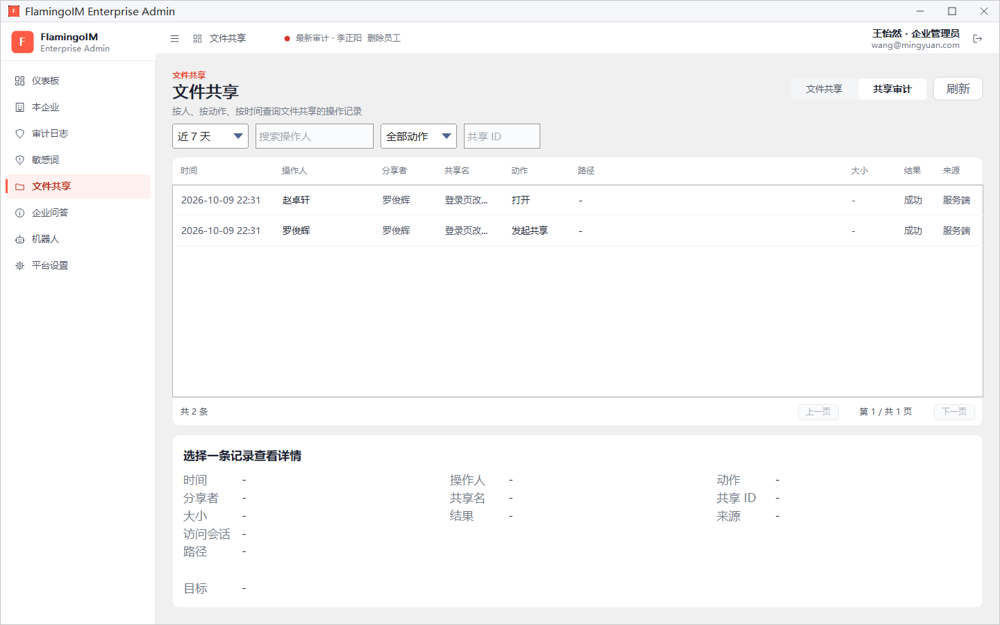

文件共享管理
员工可以在聊天里把本机的磁盘、文件夹或文件共享给同事（见客户端「文件共享」）。管理员在这里查看本企业有哪些共享、谁能访问，必要时在后台强制取消，并按人、按动作查询共享的操作记录。
- 适用：企业管理员
- 位置：左侧导航「文件共享」
- 相关开关：功能开关 → 文件共享
查看文件共享
点左侧导航的 文件共享。页面右上角有 文件共享 和 共享审计 两个页签，以及 刷新 按钮；默认打开「文件共享」页签：

- 按需在 搜索分享者的昵称或账号 框中输入分享者。
- 在右侧的状态下拉框中选择 全部状态、有效 或 已取消。
- 在列表中点选一行，下方显示这个共享的详情与成员权限。
列表各列依次是 分享者（姓名与账号）、显示路径（共享内容在分享者电脑上的路径）、所在会话（如「单聊：赵卓轩」或群名）、成员数、状态、发起时间 和 操作。
下方左侧的详情包括分享者、所在会话、共享类型（整个磁盘、文件夹或单个文件）、状态、发起时间、取消时间、取消原因（例如分享者取消、群主或群管理员取消、管理员在后台强制取消）、所属企业和显示路径；右侧的 成员与权限 列出能访问这个共享的成员以及各自的权限（如「上传」）。
强制取消共享
发现不应共享的内容时（例如误把整个磁盘共享到了大群里），管理员可以在后台直接取消：
- 在列表中找到这个共享，点该行的 强制取消。只有状态为「有效」的共享才有这个按钮。
- 在「强制取消共享」确认框中核对分享者和共享名称，点 强制取消。
取消后，这个共享的全部成员都不能再访问，正在进行的访问与传输会立即结束，分享者的客户端也会删除这条共享。列表中该行的状态变为「已取消」，取消原因记为「管理员在后台强制取消」。
强制取消不能撤销强制取消针对的是整个共享，不能只取消其中某一位成员。取消后如果还需要共享，只能由分享者在客户端重新发起。
共享审计
切到 共享审计 页签，可以按人、按动作、按时间查询文件共享的操作记录，例如谁打开了某个共享、下载了哪些文件：

- 在第一个下拉框中选择时间范围，默认是近 7 天。
- 按需在 搜索操作人 框中输入操作人的名字。
- 按需在 全部动作 中选择一种动作，或在 共享 ID 框中输入某个共享的 ID，只看这个共享的记录。
- 点选一条记录，下方显示它的详情。
列表各列依次是 时间、操作人、分享者、共享名、动作、路径、大小、结果 和 来源。可以筛选的动作有：
| 类别 | 动作 |
|---|---|
| 共享本身 | 发起共享、取消共享、调整成员 |
| 访问 | 打开、申请下载、申请上传、下载文件、上传文件 |
| 修改内容 | 新建文件夹、重命名、删除、移动 |
来源 列表示这条记录由谁记下：「服务端」是服务器记录的，「分享者」是分享者的客户端上报的。详情区还会显示共享 ID、访问会话，以及重命名、移动时的目标路径。